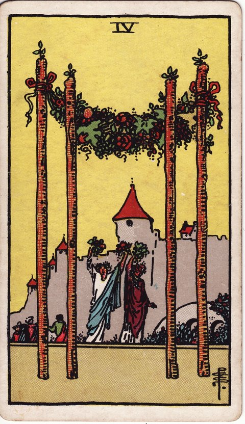

완드 · 타로 카드 백과사전
완드 4

정방향
키워드: 결실과 축하 · 안정된 기반 · 화합의 기쁨 · 웃음꽃 피는 순간 · 굳건해진 터전 · 넉넉한 나눔
조언: 함께 이룬 성취를 주변 사람들과 나누며 충분히 축하하세요.
연애운
솔로
안정적인 만남으로 이어질 좋은 인연을 만날 수 있는 시기입니다. 가족이나 친구의 소개가 좋은 결실로 이어질 수 있어요.
커플
관계에 새로운 안정감이 자리 잡으며 함께 기념할 순간이 다가오는 시기입니다. 프러포즈나 동거처럼 관계를 한 단계 다지는 이벤트를 고려해도 좋아요.
재물운
소비
재정적으로 안정되며 성취를 축하할 일이 생기는 시기입니다. 가족이나 친구와 함께하는 자리에 여유 있게 지출해도 좋습니다.
투자
안정적인 수익 구조가 자리 잡는 시기입니다. 지금까지 쌓은 기반을 바탕으로 다음 목표를 세워보세요.
취업운
구직
면접이나 합격 소식처럼 축하할 결과를 얻을 수 있는 시기입니다. 그동안의 준비가 헛되지 않았다는 확신을 가져도 좋아요.
이직
성과를 인정받고 안정적인 자리를 다지는 시기입니다. 새로운 팀에 자연스럽게 자리 잡으며 좋은 평가를 받을 수 있어요.
직장운
팀워크
팀이 목표를 이루며 함께 축하하는 화합의 시기입니다. 성과를 팀원 모두의 공로로 돌리며 함께 기뻐하세요.
개인성과
지금 자리에서 쌓아온 성과가 안정적으로 자리를 잡아가는 시기입니다. 그동안의 노력을 스스로 인정하고 자신감을 가지세요.
사업운
창업준비
창업 멤버들과 함께 다져온 기반이 자리를 잡으며 첫 매출이라는 결실을 맺는 시기입니다. 초기 팀의 노고를 서로 인정하며 함께 자축하는 자리를 가져보세요.
운영중
거래처와 직원들 사이에 신뢰가 쌓이며 사업이 한층 안정 궤도에 오르는 시기입니다. 그동안 함께해온 파트너들에게 감사를 전하는 자리를 마련해보세요.
학업운
시험준비
노력의 결실로 성취감을 느끼는 안정적인 시기입니다. 좋은 성적표를 받아들고 스스로를 충분히 칭찬해주세요.
진로고민
원하는 학교나 전공에 안정적으로 자리 잡는 시기입니다. 지금까지의 노력이 좋은 결과로 이어질 가능성이 큽니다.
건강운
신체
몸과 마음이 안정되어 편안함을 느끼는 시기입니다. 꾸준한 관리의 성과가 눈에 보이기 시작하니 지금의 루틴을 유지하세요.
정신
가족이나 친구들과 함께하는 시간이 마음의 안정을 주는 시기입니다. 좋은 사람들과의 교류로 에너지를 충전해보세요.
대인관계운
새로운 인연
새로운 인연이 안정적인 관계로 자리 잡기 좋은 시기입니다. 가족 모임이나 지인 소개 등에서 좋은 사람을 만날 수 있어요.
기존 관계
관계에서 안정감을 느끼며 함께 축하할 일이 생기는 시기입니다. 오랜 친구나 가족과 즐거운 자리를 가져보세요.
명예운
성취를 인정받으며 좋은 평판을 얻는 시기입니다. 주변 사람들의 축하와 인정을 자연스럽게 받아들이세요.
이사운
안정적인 곳으로 이동하며 새 출발을 축하하는 시기입니다. 새 보금자리에서의 시작을 가까운 사람들과 함께 기념해보세요.
자식운
아이와 함께 축하할 좋은 일이 생기는 안정적인 시기입니다. 아이의 성취를 가족 모두가 함께 기뻐해주세요.
역방향
키워드: 불안정한 기반 · 성급한 축하 · 조화의 부족 · 겉모습 뒤의 균열 · 숨겨진 불협화음 · 이른 자축
조언: 축하하기 전에 기반이 정말 안정적인지 한 번 더 점검해보세요.
연애운
솔로
관계의 기반이 아직 불안정하게 느껴질 수 있습니다. 서둘러 관계를 정의하려 하기보다 서로를 더 알아가는 시간이 필요합니다.
커플
축하할 일을 앞두고도 마음 한구석이 편치 않을 수 있습니다. 겉으로 드러나지 않은 갈등이 있다면 미리 짚고 넘어가세요.
재물운
소비
겉으로는 안정돼 보여도 기반이 탄탄하지 않을 수 있습니다. 큰 지출을 계획하기 전에 실제 자산 상황을 다시 확인해보세요.
투자
안정적이라 믿었던 투자처에 예상치 못한 변수가 있을 수 있습니다. 방심하지 말고 정기적으로 점검하는 습관을 들이세요.
취업운
구직
합격 소식이 늦어지거나 결과가 불확실해 초조할 수 있습니다. 결과를 기다리는 동안 다른 가능성도 함께 준비해두세요.
이직
팀워크나 협업에서 조화가 부족해 불안정할 수 있습니다. 새로운 환경에 적응하는 데 시간이 더 필요하다는 것을 받아들이세요.
직장운
팀워크
축하 자리를 준비하면서도 팀원 간 역할 분담을 놓고 서운함이 오갈 수 있습니다. 누가 얼마나 기여했는지를 두고 뒷말이 나오기 전에 공로를 투명하게 정리해보세요.
개인성과
안정적으로 보이는 자리도 방심하면 흔들릴 수 있습니다. 성과에 안주하지 말고 꾸준히 실력을 다져가세요.
사업운
창업준비
기반이 채 다져지기도 전에 성과를 기대하고 있을 수 있습니다. 축하는 잠시 미루고 내실을 다지는 데 집중하세요.
운영중
매출이 꾸준해 보여도 내부 조직 체계나 자금 흐름은 아직 허술할 수 있습니다. 직원 업무 분장과 자금 관리 체계를 다시 한번 점검해보세요.
학업운
시험준비
아직 완전히 다져지지 않은 기초가 불안 요소가 될 수 있습니다. 성급하게 다음 단계로 넘어가기보다 기본을 다시 점검하세요.
진로고민
선택한 진로에 확신이 서지 않아 불안할 수 있습니다. 축하하기엔 이르다는 마음이 든다면 조금 더 알아보는 시간을 가지세요.
건강운
신체
안정된 것처럼 보여도 관리가 더 필요한 상태일 수 있습니다. 방심하지 말고 정기적인 검진을 받아보는 것이 좋습니다.
정신
편안해 보이는 겉모습과 달리 마음 한구석이 불편할 수 있습니다. 억누른 감정이 있다면 믿을 만한 사람에게 털어놓아보세요.
대인관계운
새로운 인연
새로 사귄 사람과 아직 서로에 대한 신뢰가 충분히 쌓이지 않은 시기입니다. 성급하게 가까워지기보다 서서히 신뢰를 쌓아가세요.
기존 관계
편한 사이라는 이유로 소홀히 대했던 태도가 서서히 문제로 드러날 수 있습니다. 당연하게만 여기지 말고 오랜만에 안부를 물으며 관계를 다시 챙겨보세요.
명예운
아직 평판의 기반이 탄탄하지 않을 수 있습니다. 성급하게 인정을 바라기보다 꾸준히 신뢰를 쌓아가는 데 집중하세요.
이사운
이동 후 정착이 아직 불안정할 수 있습니다. 새로운 환경에 완전히 적응하기까지 조급해하지 마세요.
자식운
안정된 것처럼 보여도 더 신경 써야 할 부분이 있을 수 있습니다. 겉으로 드러나지 않은 아이의 어려움은 없는지 살펴보세요.
같은 슈트: 완드 에이스 · 완드 2 · 완드 3 · 완드 4 · 완드 5 · 완드 6 · 완드 7 · 완드 8 · 완드 9 · 완드 10 · 완드 시종 · 완드 기사 · 완드 퀸 · 완드 킹
홈에서 직접 카드 뽑아보기 ↗